6762b929 → dba91976 → 6f5dd872) плюс доработки в рабочем
дереве: админ-тарифы, полный профиль компании при регистрации, обзор компании со всеми полями,
командный чат компании поверх реального /chat, переход на identity-based приглашения
(в т.ч. приглашение водителя), рендер приглашения в колокольчике диспетчера, поллинг очереди офферов,
человекочитаемая длительность звонка в чате и две правки веб-звонков (WebRTC). Все скриншоты ниже —
реальный Playwright-прогон (реальные компоненты приложения на застабленном по live-спеке API;
каждая правка runtime-верифицирована отдельным qa/verify-*.mjs). 14 новых verify-скриптов.
Лимиты компании (8 ресурсов) меняются только назначением тарифа, а не прямым PATCH по max_*.
Добавлена вкладка «Тарифы» (только для creator-админа) — каталог тарифов со списком/созданием/правкой
и тарифом по умолчанию — и модалка «Assign tariff» на /admin/companies: при назначении
лимиты тарифа копируются в компанию (существующие компании не затрагиваются последующей правкой тарифа),
а превышение показывается как предупреждение over_quota. Логика — в чистом tariffs.ts
(юнит-тесты adminTariffs.test.ts). Эндпоинт POST /v1/admin/companies/:id/tariff {tariff_id}.
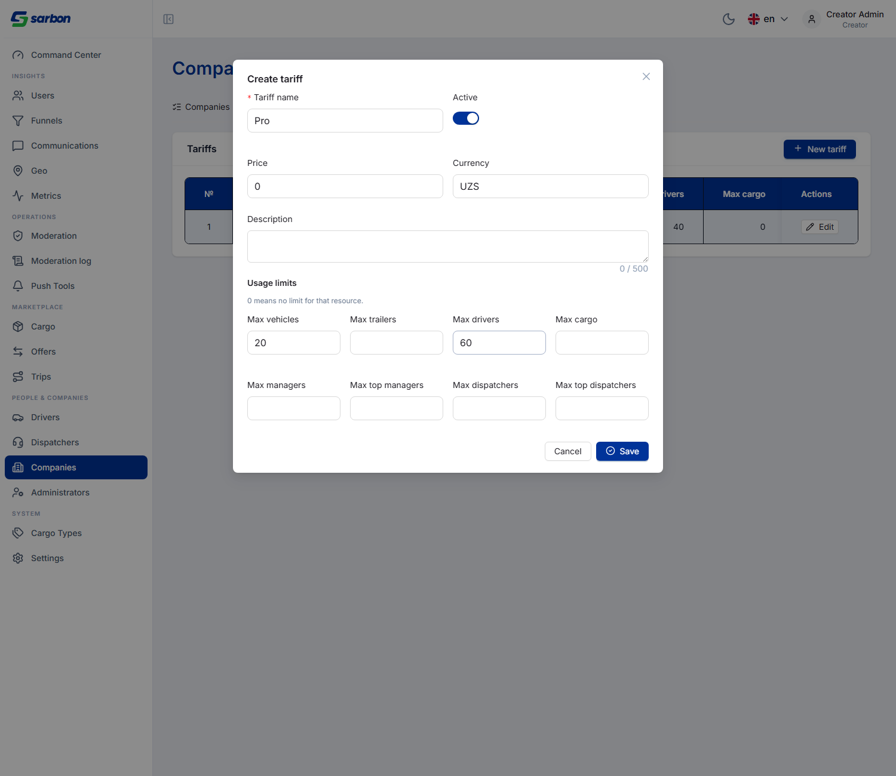
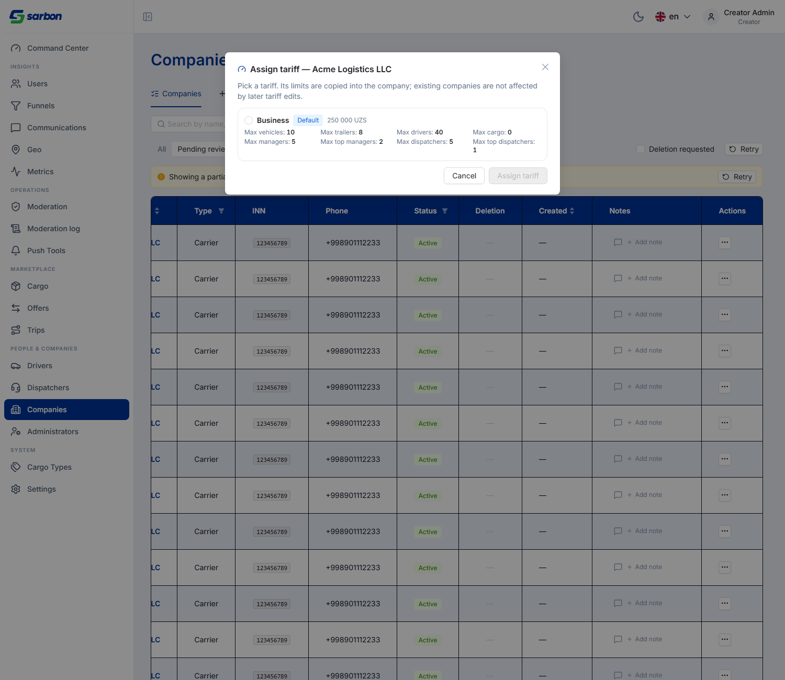
Форма /company/create расширена с 3 обязательных полей до полного профиля: контакты
(телефон/email/сайт/адрес), юридический блок (юр. адрес, ФИО и должность руководителя, номер лицензии)
и банковские реквизиты (банк, счёт, МФО, ИНН банка) — все опциональные, помечены (optional).
Обязательны только название, тип компании и ИНН (9-значный STIR / 14-значный PINFL).
Создание уже возвращает company-scoped пару токенов, поэтому follow-up switch-company не требуется;
опциональные поля дописываются одним PATCH после создания. Логика в companyCreate.ts.
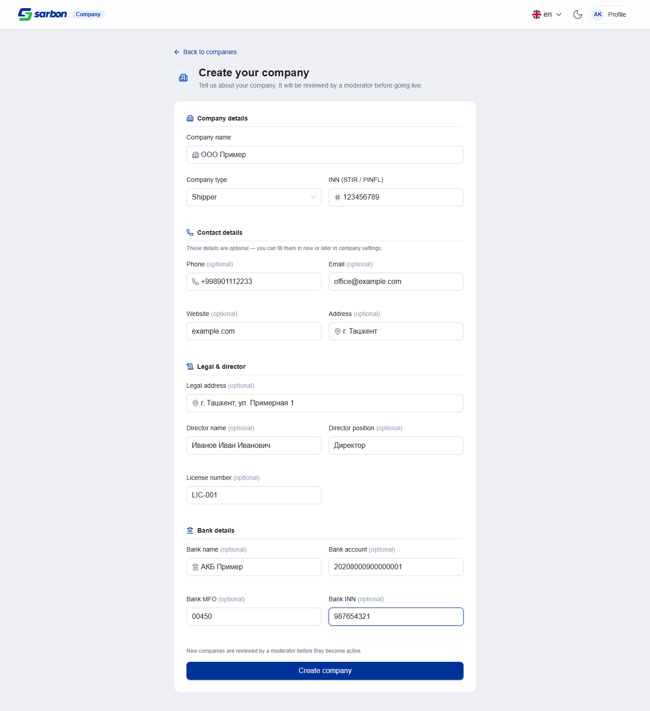
GET /v1/companies/:id + реквизиты + баннер удаления FIX UI
По тикету SARB-COMPANY экран «Обзор» показывал лишь ~8 из ~30 полей, которые возвращает
GET /v1/companies/:id. Дописаны: карточка реквизитов (юр. адрес, руководитель и должность,
банк/счёт/МФО/ИНН банка), владелец (с бейджем «· Siz», когда это вы), тариф, updated_at,
а карточки «Автопарк» и «Лимиты» объединены в одну квота-карту (текущее использование + лимит, метка
«Limitdan oshib ketildi» при превышении). Все даты приведены к ташкентскому времени, пустые значения — единый
placeholder. Плюс — редизайн баннера запроса на удаление: янтарная плашка с иконкой Trash2
и кнопкой «Отозвать запрос» (владелец), т.к. запрос обратим и ждёт модерации. Логика — в companyOverview.ts
(юнит-тесты, включая проверку 00:30Z → 05:30).
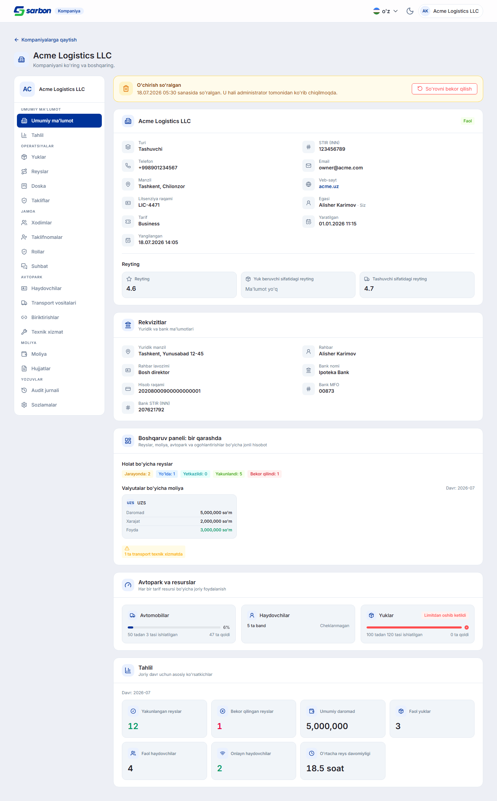
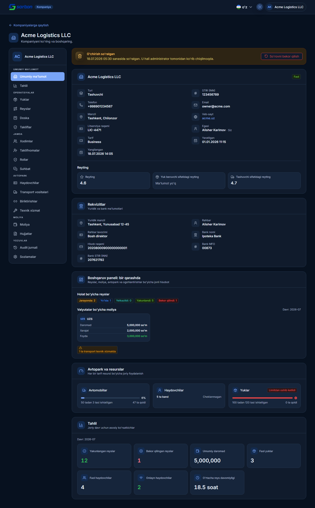
/chat + звонки FEATURE
Командный чат компании — это тот же диспетчерский ChatPage, переиспользованный на
/company/chat/:companyId (сайдбар, медиа, голосовые/видео-заметки и звонки), сделанный
surface-aware через useChatIdentity + chatSurface.ts: под /company/*
запросы к /v1/chat/* идут с company-токеном (baseClient.resolveDefaultAuthMode),
а обычный /chat остаётся байт-в-байт прежним. Владелец входит в групповой чат из кабинета,
приглашённые CM/DM открывают ту же группу в обычном /chat. Модалка входящего звонка
смонтирована и на company-чате. Плюс — карточки на /company переключаются кликом
(useCompanyOpen).
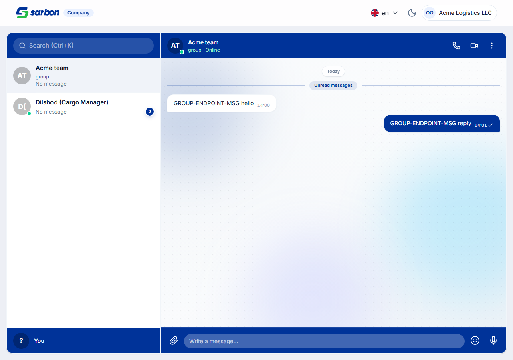
Приглашения сотрудников были построены на устаревшем link/token-механизме. Переведены на новую
identity-based модель: приглашаешь уже зарегистрированного пользователя по телефону →
201 {id, status:"pending"} (без invite_link), а приглашённому в приложение падает
invitation_offer. Он читает его через GET /v1/company-users/offers и принимает по id
(POST /v1/invitations/:id/accept / decline). На домашней странице кабинета добавлена
карточка «Invitations for you» (Accept / Decline) — над веткой «нет компаний», чтобы приглашённый без
своих компаний всё равно её видел. Разобраны ключевые ошибки создания: must_register_first (404),
already_member (409). Логика — companyInvitationOffers.ts (fail-open: скрывается только
явный терминальный статус). Старый /accept-invite?token= оставлен как legacy-fallback.
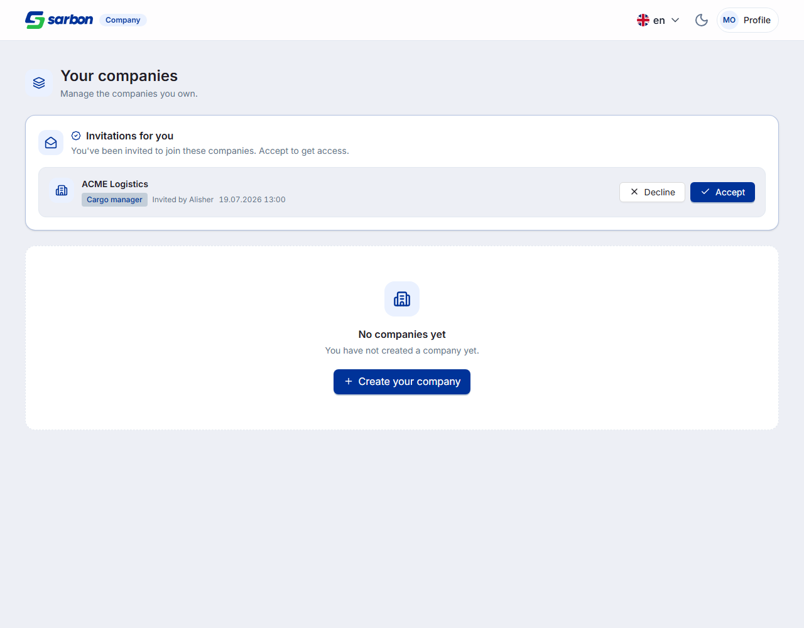
Две связанные правки выпадающего списка ролей:
roles[].name из reference/company приходит в ALL-CAPS без
разделителей (CARGOMANAGER), а me/permissions — в PascalCase, company_user_roles
— в SNAKE_CASE. Лукап матчил только PascalCase, поэтому лейбл падал в «Cargomanager» одним словом. Теперь
companyRoleI18nKey нормализует (lowercase + вырезание не-буквенно-цифровых) — все три регистра
резолвятся в локализованный лейбл.roles[] шире, чем сотруднические роли — там есть
OWNER (никогда не приглашается) и не-сотруднические CARRIER/DRIVER; выбор
любой из них всегда давал 403. Новый parseInvitableCompanyRoleOptions оставляет только роли из
авторитетного company_user_roles и всегда убирает Owner. Плюс — гейт по типу компании: SHIPPER не
может нанимать driver/fleet-роли (зеркалит forbiddenForTypes: ['SHIPPER']), CARRIER/BROKER — без
ограничений (fail-open).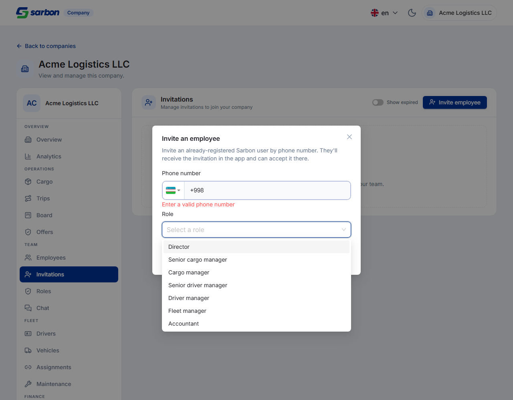
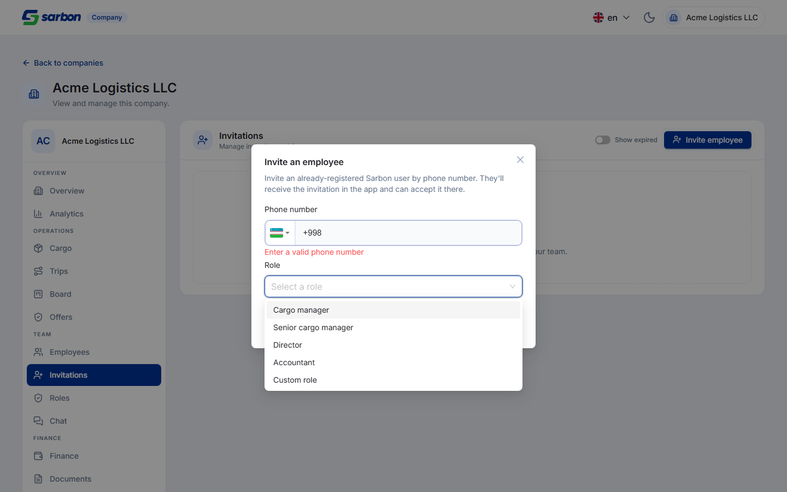
UI приглашений умел звать только офисных сотрудников ({phone, role_id}). «Водитель» намеренно
отсутствует в ролях (он не сотрудническая роль и 403-ит), а реальная возможность звалась через отдельный
эндпоинт. Добавлен тумблер «Employee | Driver» в модалке приглашения: режим Driver прячет дропдаун ролей,
показывает подсказку и шлёт только телефон в POST /v1/companies/:id/driver-invitations {phone}
(право fleet.driver.manage, доступно всем трём типам компаний). Приглашённый водитель принимает
в приложении водителя, а не в веб-кабинете. Логика — buildCreateDriverInvitationPayload +
driverInvitationErrorCode (+7 тестов), i18n invitations.mode.* / invitations.driver.*
во всех 15 локалях.
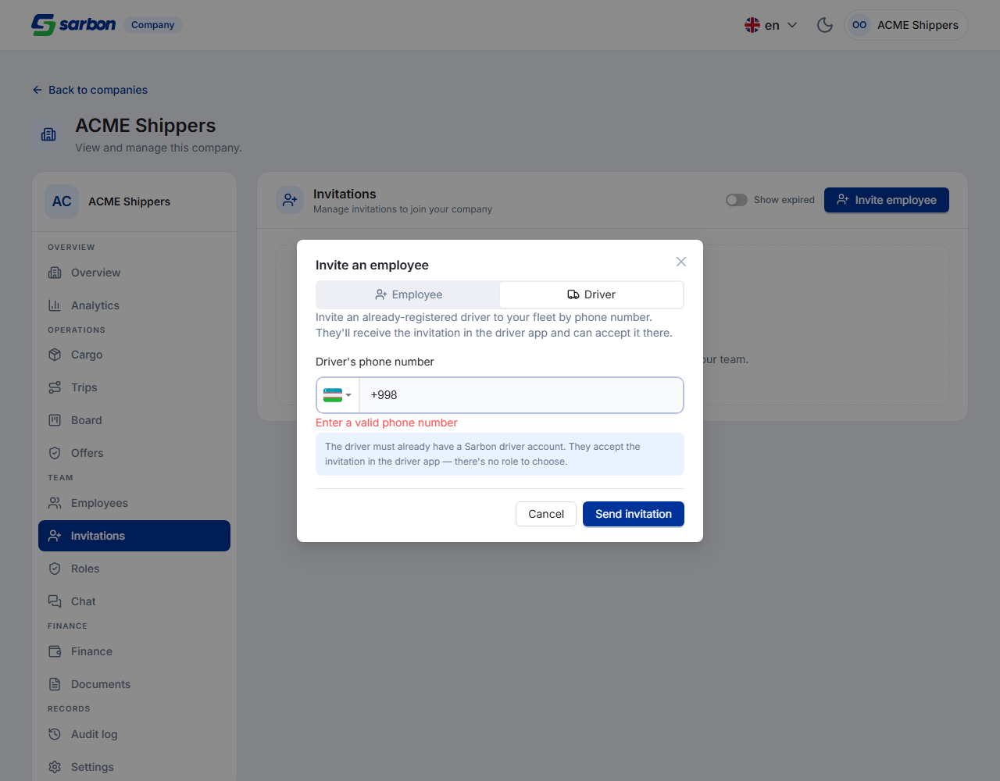
invitation_offer в колокольчике FEATURE
Бэкенд шлёт приглашение сотрудника как invitation_offer в родную ленту приглашённого (в т.ч.
диспетчера), но веб-приложение диспетчера этот тип не рисовало — приглашённый CM/DM ничего не видел.
В колокольчик добавлены детект/извлечение/сообщение (isCompanyInvitationOfferNotification,
getCompanyInvitationOfferInfo, getCompanyInvitationOfferMessage — роль прогоняется
через companyRoleLabel, аккуратные фолбэки), тег «Company invitation», иконка Building2,
CTA «Open invitation» (deep-link на /:lang/company) и явный обработчик в SSE-подписках с OS-нотификацией.
Роль строки — осведомление; принять можно, войдя в кабинет компании тем же телефоном. i18n во всех 15 локалях.
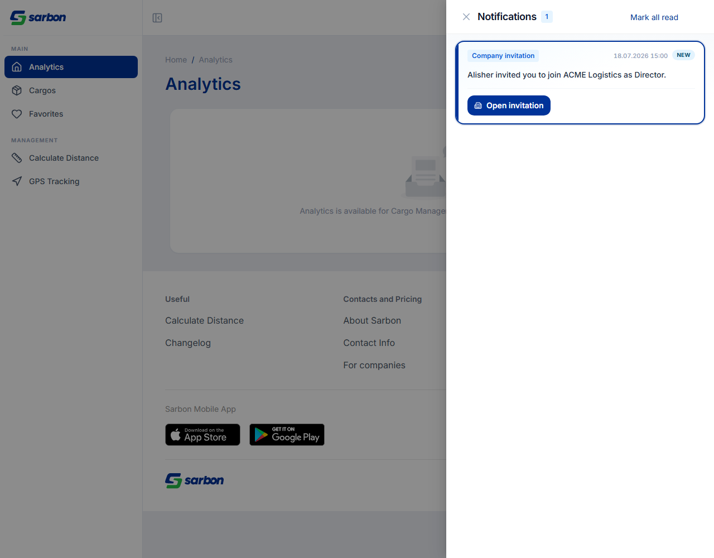
Раздел «Офферы» компании (очередь pending-approval, где DM/SeniorDM одобряет ставку водителя на внешний груз)
и по-грузовой вид входящих офферов ревалидировались только по 60-секундному staleTime — ни поллинга,
ни refetch-on-focus. У company-поверхности нет realtime-моста, поэтому ставка, прилетевшая пока менеджер на
странице, не появлялась до ручного обновления. Обеим useCompanyGet-запросам добавлено
{ staleTime: 15s, refetchInterval: 20s, refetchIntervalInBackground: false, refetchOnWindowFocus: true }
(для по-грузового вида — совмещено с существующим гейтом enabled). Verify-скрипт подтверждает: запрос
бьётся на загрузке (1) и снова в течение 24s (2).
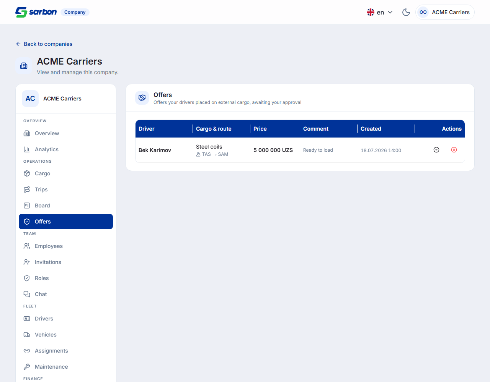
По тикету SARB-FRONT в превью списка бесед длительность звонка показывалась сырыми секундами — «Кўнғироқ
якунланди (73с)» — вместо человекочитаемого «1 дақ. 13 сон.», которое рисует пузырь треда. Причина: превью
(ConversationItem) рендерило серверный last_message_preview дословно, а пузырь считает
лейбл из payload.duration_seconds. Теперь превью для звонка пересобирается на клиенте
(formatChatCallEventPreview) — статус + длительность, совпадая с пузырём и следуя текущему языку.
Плюс — под минуту минуты больше не рисуются: «0 дақ. 22 сон.» → просто «22 сон.» (новый ключ
durationSecondsLabel во всех 15 локалях), от минуты и выше формат прежний.
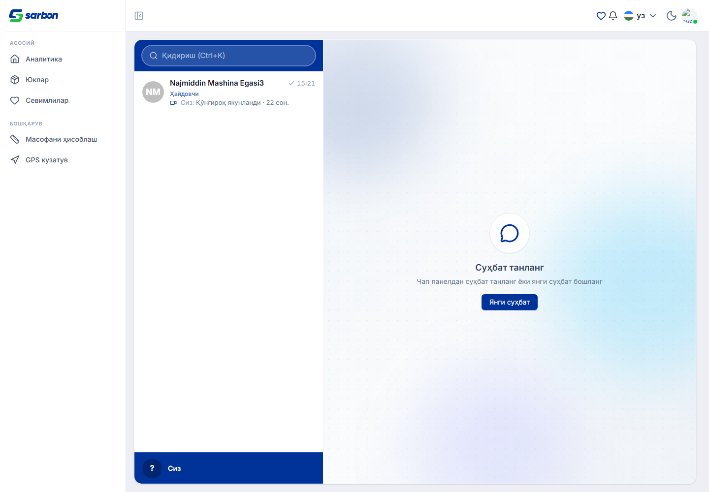
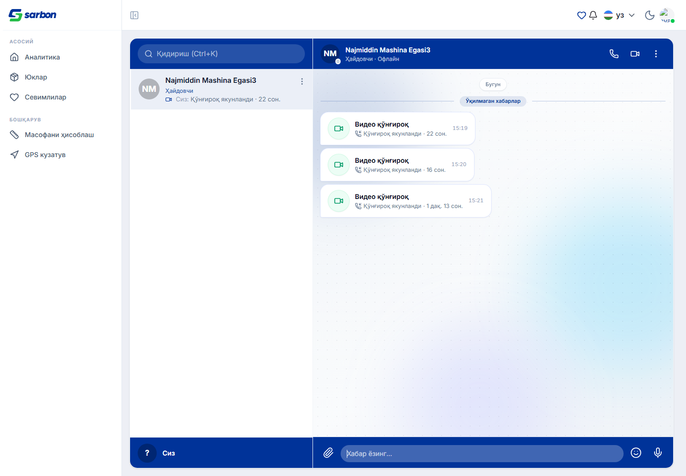
Две правки веб-звонков (коммит «web call fix» + доработки):
m=audio a=recvonly (web не слал звук) и
m=video a=sendrecv a=msid:- (видео без MediaStream) — картинка на телефоне замерзала, звук молчал;
web-как-caller работал. Причина: после setRemoteDescription(offer) ответная сторона недо-переназначала
слоты — forceVideoSendrecv звал replaceTrack() без setStreams() (→
msid:-), аудио-трансивер не трогался вовсе. Фикс: forceVideoSendrecv теперь зовёт
setStreams() (реальный msid), новые findAudioTransceiver/forceAudioSendrecv
пере-привязывают микрофон и форсят sendrecv на аудио-линии; answerIncomingOffer
пере-утверждает обе m-линии перед createAnswer, после чего срабатывает кап 300 kbps / 20 fps.
Real-engine SDP-верификация: старая стратегия воспроизводит баг, новая — обе линии sendrecv с
реальным msid.endCall пропускал очистку при
сбое (ветки 409 и generic-error не звали cleanupCall), а устаревший ACTIVE-поллинг
мог заново захватить медиа после сброса (гард пропускал только 'error', не 'ended').
Фикс: endCall освобождает медиа первым, безусловно (до сетевого раунда, end/cancel POST —
best-effort в try/catch), а гард reconcile теперь возвращается на 'error' || 'ended' — устаревший
поллинг не переоткрывает устройства.qa/verify-webrtc-answer-sdp.mjs — headless Chromium WebRTC-loopback; новая стратегия даёт обе m-линии sendrecv с реальным msid (критерий №1).track.stop() на локальных стримах переводит mic+camera readyState live → ended (устройства освобождены) — механизм, который использует cleanupCall.| Гейт | Результат |
|---|---|
tsc -b (полная проверка типов проекта) | exit 0 |
vitest run | 1950 / 1950 |
eslint --max-warnings 0 + prettier (изменённые файлы) | чисто |
| Локали | 15/15 (company.* / admin.* / tripNotifications.* — en/uz/ru + плейсхолдеры) |
| Runtime-верификация каждой правки | 14 новых qa/verify-*.mjs, 0 ошибок консоли |
WebRTC answer-path SDP (verify-webrtc-answer-sdp.mjs) | обе m-линии sendrecv + реальный msid |
| Adversarial / code-review follow-ups | находки разобраны |
6762b929 «SARB-COMPANY-Overview … SARB-FRONT-Overview» — админ-тарифы (TariffsPanel, AssignTariffModal, tariffs.ts), полный профиль при регистрации (companyCreate.ts), обзор компании (companyOverview.ts, редизайн баннера удаления), командный чат компании (useChatIdentity, chatSurface.ts, CompanyChatPage, companyGroupMessages.ts), identity-приглашения (companyInvitationOffers.ts, InvitationOffersCard), гейт ролей по типу, useCompanyOpen.dba91976 «invitation» — ролевой дропдаун (companyRole.ts нормализация + parseInvitableCompanyRoleOptions), длительность звонка в чате (chatCallEvents.ts, ConversationItem), тикет по driver-conflict.6f5dd872 «web call fix» — WebRTC ответная сторона (webrtcTuning.ts: forceAudioSendrecv/findAudioTransceiver/setStreams), GlobalAudioCallModal.driver-invitations), рендер приглашения в колокольчике диспетчера (tripNotificationUtils.ts, NotificationRow, useDispatcherSseSubscriptions), освобождение камеры/микрофона на завершении звонка, поллинг очереди офферов (OffersSection/CargoSection).